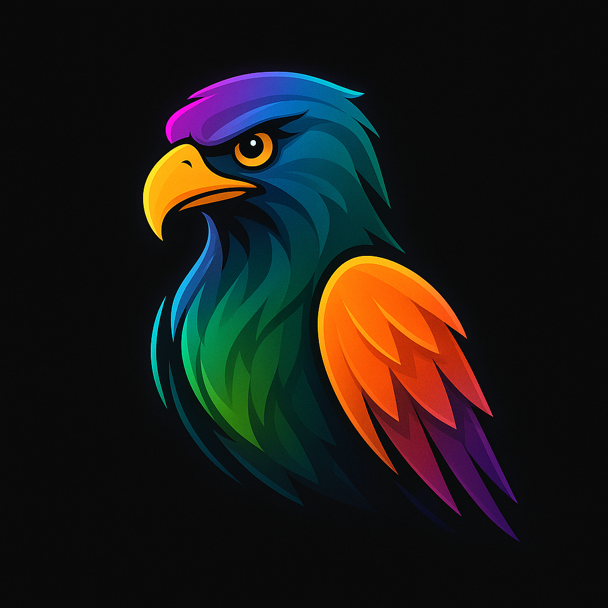

About Spectral
Spectral is your trusted partner in monitoring and observability. We help businesses see everything and miss nothing by providing expert support for logs, metrics, and traces. Our eagle mascot represents our sharp focus and vigilance—ensuring your systems are always in sight and under control.
Our Story
Founded by Dalen, Momo, and Manvi, Spectral was born from a passion for helping businesses unlock the full value of their monitoring tools. We saw too many companies struggling with alert fatigue, poor configuration, and a lack of expertise. Our mission is to change that—empowering teams to take ownership of their observability ecosystem and drive real business value.
Meet Our Mascots

Monitoring
Always watching, always alert.

Troubleshooting
Solving problems before they escalate.
Live Support
Here when you need us most.
Why Spectral?
- Expert audits and tool integrations
- Custom dashboards and alert tuning
- Performance and cost optimization
- Security monitoring and log management
- Training and enablement for your team
We work with SMBs and enterprises across fintech, healthcare, SaaS, retail, logistics, and government. Ready to see everything and miss nothing? Contact us today!